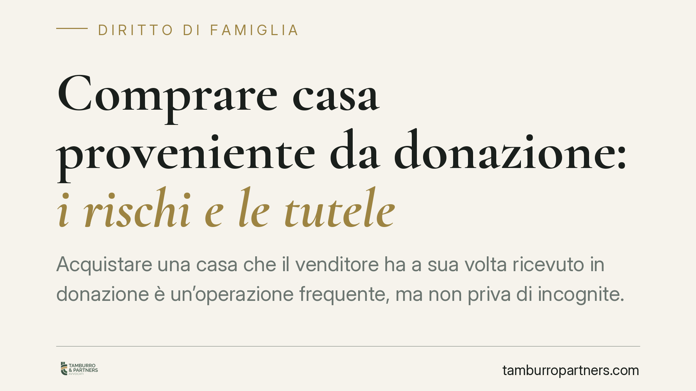

Comprare casa proveniente da donazione: i rischi e le tutele
Acquistare una casa che il venditore ha a sua volta ricevuto in donazione è un'operazione frequente, ma non priva di incognite. Il nodo riguarda i diritti degli eredi legittimari, che in certi casi possono aggredire il bene anche dopo il passaggio al terzo acquirente. Vediamo quali tutele offre oggi l'ordinamento e come muoversi prima del rogito.

Il problema: la provenienza donativa
Quando un immobile è pervenuto al venditore tramite donazione, l'acquirente eredita un rischio latente. La donazione, infatti, è un atto che può ledere la quota di eredità riservata per legge ai cosiddetti legittimari (coniuge, figli, in loro assenza gli ascendenti).
Alla morte del donante, questi soggetti possono agire per reintegrare la propria quota. È l'azione di riduzione (artt. 553 e seguenti del Codice civile), con cui si chiede che la donazione lesiva sia dichiarata inefficace nei limiti necessari a ricostituire la legittima.
Il problema per chi compra è che, una volta ridotta la donazione, i legittimari possono rivolgersi anche contro chi ha acquistato il bene dal donatario. È il meccanismo dell'azione di restituzione verso i terzi, disciplinata dall'art. 563 c.c.
Il quadro normativo vigente
La materia è stata ridisegnata dalla legge 14 maggio 2005, n. 80, che ha introdotto limiti temporali a tutela della circolazione dei beni.
In base all'art. 563 c.c., l'azione di restituzione contro il terzo acquirente non può essere esercitata se sono trascorsi vent'anni dalla trascrizione della donazione. Decorso tale termine, il bene si consolida in capo al terzo e il legittimario, pur potendo agire in riduzione contro il donatario, non può più aggredire l'immobile presso l'acquirente.
L'art. 561 c.c. completa il quadro: gli immobili restituiti a seguito della riduzione tornano liberi da pesi e ipoteche di cui il donatario li aveva gravati, salvo che la riduzione sia domandata dopo venti anni dalla trascrizione della donazione.
Il termine ventennale può essere "rinnovato" dal legittimario tramite un atto di opposizione alla donazione (art. 563, comma 4, c.c.), da trascrivere e notificare al donatario e al suo avente causa. L'opposizione sospende il decorso del termine ventennale, ma perde efficacia se non rinnovata prima che siano trascorsi vent'anni dalla sua trascrizione.
Perché la distinzione tra atto oneroso e gratuito conta
La posizione del terzo dipende dal titolo con cui ha acquistato.
Chi compra a titolo oneroso (una normale compravendita) gode di una tutela più ampia: deve rispondere solo dopo che i legittimari hanno escusso senza esito il patrimonio del donatario, e comunque entro i limiti temporali dell'art. 563 c.c.
Chi riceve il bene a titolo gratuito (ad esempio una seconda donazione) è esposto più direttamente, perché non ha sopportato alcun sacrificio economico.
Resta fermo che, finché il donante è in vita, nessuna azione di riduzione è possibile: essa presuppone l'apertura della successione. Fino a quel momento il rischio è solo potenziale.
Implicazioni pratiche per chi acquista
La provenienza donativa non rende l'acquisto "insicuro" in assoluto, ma impone verifiche mirate. Molto dipende da tre fattori: la data di trascrizione della donazione, l'esistenza di eventuali atti di opposizione trascritti e il quadro dei potenziali legittimari del donante.
Un ulteriore aspetto spesso sottovalutato riguarda la finanziabilità: alcuni istituti di credito sono più cauti nel concedere mutui su immobili di provenienza donativa recente, proprio per il rischio restitutorio.
Ogni situazione va valutata in concreto. Consigliamo di non affidarsi a formule generiche ma di ricostruire con precisione la storia dell'immobile e la posizione familiare del donante.
Cosa fare in concreto
- Richiedete una visura ipocatastale ventennale e verificate la data di trascrizione della donazione: è da quel momento che decorre il termine dell'art. 563 c.c.
- Controllate l'eventuale trascrizione di atti di opposizione da parte dei legittimari, che possono riaprire i termini.
- Ricostruite il quadro dei potenziali legittimari del donante (coniuge, figli, ascendenti) per stimare il rischio di future azioni.
- Valutate con il notaio le soluzioni di garanzia disponibili, quali polizze a copertura del rischio donativo o la rinuncia dei legittimari all'opposizione, dove praticabile.
- Fatevi assistere da notaio e legale prima della firma del preliminare, non solo al rogito: le tutele contrattuali vanno impostate per tempo.
In sintesi
L'acquisto di un bene di provenienza donativa è gestibile, ma richiede un'istruttoria accurata. Il decorso del termine ventennale e l'assenza di opposizioni trascritte riducono sensibilmente il rischio; nei casi di donazione recente occorre invece maggiore cautela e strumenti contrattuali adeguati.
Contributo informativo a cura di Tamburro & Partners - Avv. Giuseppe Tamburro. Non costituisce parere legale.
Ogni famiglia ha il suo equilibrio.
Separazione, divorzio, affidamento, assegno: se vuoi un confronto riservato su una specifica situazione, scrivi allo studio. Ti rispondiamo entro un giorno lavorativo.